The Meownica Web App Workflow™ goes like this:
- Write bad code until the file is too long
- Refactor that code into some web components
- Repeat steps 1-2 until done
- Realize you forgot to do the PWA dance, so your app is scoring 45 on Lighthouse
- Make it into a PWA by doing basically the same steps every time.
I’m not joking about step 5. It’s all a bunch of fairly simple boilerplate and
party tricks, that I copy paste from a couple of apps. This time I decided to make
them into a checklist. This checklist is keen on the polymer cli, because I
usually write apps that use Polymer. If you don’t, you can replace the polymer cli with your favourite bundler/service-worker generator!
If you just want the checklist, here it is. If you want to see how I made this checklist and how the Lighthouse score improved as I checked more items off, jump to the case-study!
Checklist
generate icons (sizes: 48x48, 96x96, 144x144, 192x192, 512x512) [example]
add a manifest.json [example]
add the rest of the manifesty things to your index.html [example]
add the polymer cli: npm install -g polymer-cli
add a polymer.json [example]
run polymer build
register your Service Worker [example]. If you have a complicated app setup or caching strategy, you might want to generate a sw-precache-config.js file.
add fallback content while your main element is updating [example]. As a general rule, I try to match this fallback content very closely to what the first paint of the element will actually be, so that there’s no visual jank
make sure that your page renders something without JavaScript [example]
Provided your app isn’t outrageously big (think: the only thing that will make loading 10MB of JavaScript up front better, is not loading 10MB of JavaScript), this should help put you somewhere in the green scores on Lighthouse.
Step by step
So, here’s the post-game analysis of what I did to make indie-catalog into a PWA with a pretty decent Lighthouse score. I didn’t take it all the way to 💯, because the last 5-10 points always end up being very app specific, and that kind of sorcery is best left for a different blog post.
It doesn’t particularly matter what my app does – you can think of it as a generic Polymer 2.0 app, with a bunch of Polymer elements, that I have done nothing special to. It doesn’t have a Service Worker, it doesn’t lazy load anything, it doesn’t bundle or minify any of the loaded code. Its Lighthouse score is an absolute tragedy (minus that a11y score 🙌):
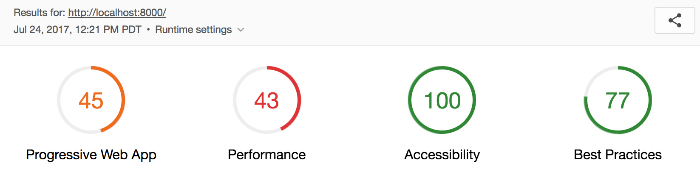
The PWA section details point to the very straight forward problem of “you have no Service Worker, what did you expect”. TBH, exactly this.
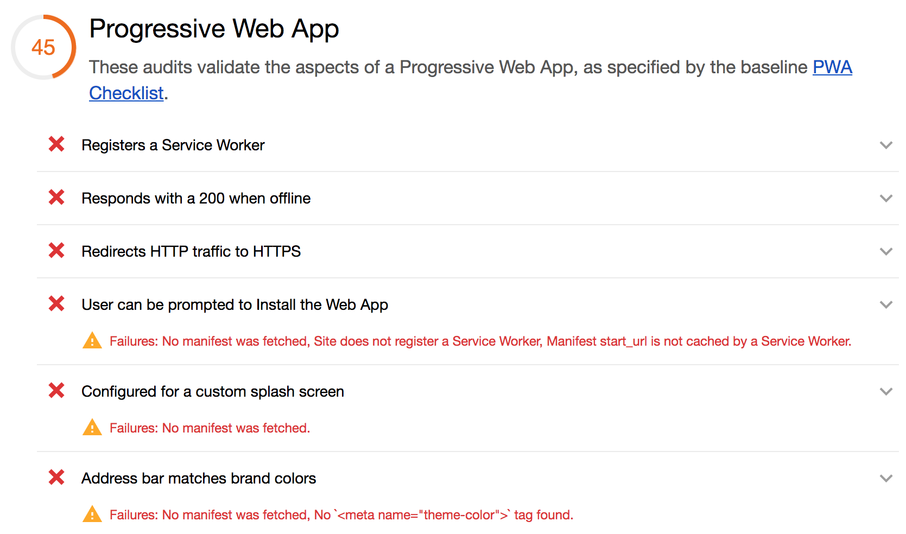
Performance wise, the app is really slow. Because it doesn’t minify any if its sources, it has to download a lot of things, a lot of times, which is a horrifying experience on 3G:
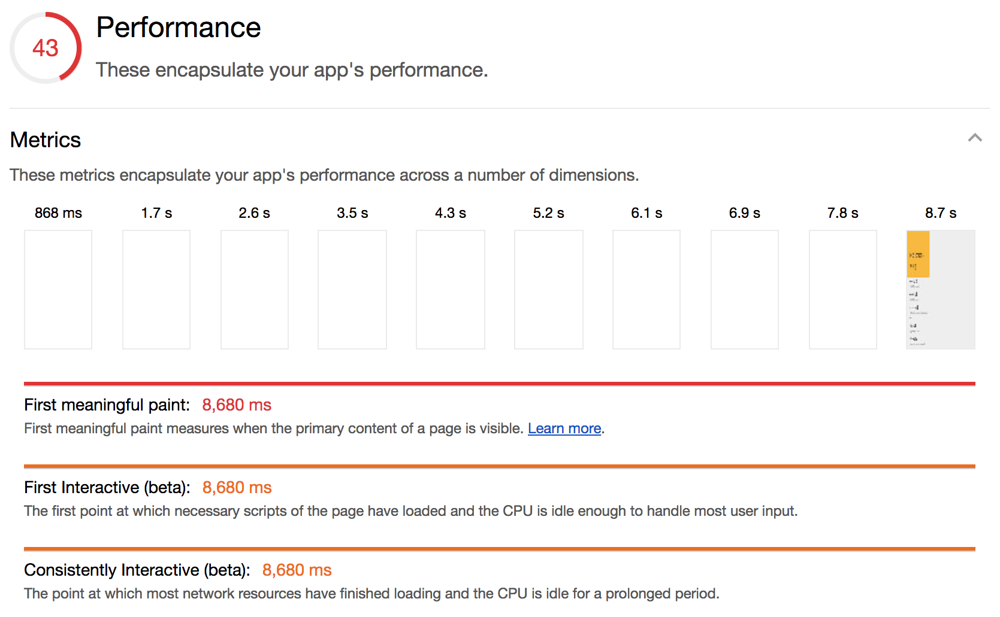
1. 📝 Add a manifest.json
This is easy Lighthouse points. This is a manifest.json skeleton that I use; replace
your app name and theme colour:
{
"name": "your-name",
"short_name": "shorter",
"start_url": "/",
"display": "standalone",
"theme_color": "#fbbc05",
"background_color": "#fbbc05",
"icons": [
{
"src": "icons/icon-192x192.png",
"sizes": "192x192",
"type": "image/png"
},
{
"src": "icons/icon-512x512.png",
"sizes": "512x512",
"type": "image/png"
}
]
}
Then, load it in your index.html, along with this other absolutely fantastic
platform-specific copy pasta. I’m sure there’s a script out there that
does it for you, but I’ve become so good at copy pasting it that it really doesn’t
matter. Also, it’s not like you do it more than once an app:
<link rel="icon" href="icons/favicon.ico">
<!-- See https://goo.gl/OOhYW5 -->
<link rel="manifest" href="manifest.json">
<!-- See https://goo.gl/qRE0vM -->
<meta name="theme-color" content="#fbbc05">
<!-- Add to homescreen for Chrome on Android. Fallback for manifest.json -->
<meta name="mobile-web-app-capable" content="yes">
<meta name="application-name" content="indie-catalog">
<!-- Add to homescreen for Safari on iOS -->
<meta name="apple-mobile-web-app-capable" content="yes">
<meta name="apple-mobile-web-app-status-bar-style" content="black-translucent">
<meta name="apple-mobile-web-app-title" content="indie-catalog">
<!-- Homescreen icons -->
<link rel="apple-touch-icon" href="icons/icon-48x48.png">
<link rel="apple-touch-icon" sizes="96x96" href="icons/icon-96x96.png">
<link rel="apple-touch-icon" sizes="144x144" href="icons/icon-144x144.png">
<link rel="apple-touch-icon" sizes="192x192" href="icons/icon-192x192.png">
<!-- Tile icon for Windows 8 (144x144 + tile color) -->
<meta name="msapplication-TileImage" content="icons/icon-144x144.png">
<meta name="msapplication-TileColor" content="#fbbc05">
<meta name="msapplication-tap-highlight" content="no">
The shitty part of this is that you have to generate your icons at 5 different sizes. But, I told you, it’s easy 💰: once you do this, your PWA score will jump quite a bit (from 45 to 64):
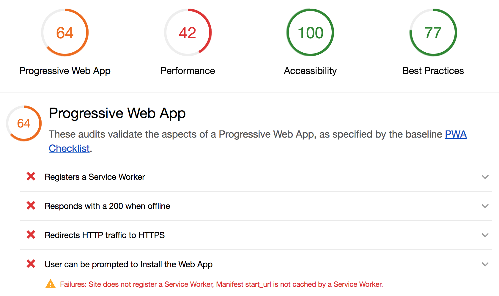
2. 🏃 Bundle with the Polymer CLI
I use the polymer cli because it bundles and minifies my sources, and generates a Service Worker for free, and basically solves all of my PWA problems. To install it, run
npm install -g polymer-cli
In order to make it go, you need to create a polymer.json file. Here is my starting skeleton:
{
"entrypoint": "index.html",
"fragments": [
"some-element.html",
"maybe-another-element.html"
],
"sources": [
"src/**/*",
"images/**/*",
"i-dont-know-your-directory-structure"
"bower.json"
],
"extraDependencies": [
"manifest.json",
"bower_components/webcomponentsjs/*"
],
"builds": [
{ "preset": "es5-bundled" },
{ "preset": "es6-bundled" }
],
"lint": {
"rules": ["polymer-2"]
}
}
Remove the lint rule if you don’t want to lint your code. Check the CLI’s
docs or Polymer shop-app’s polymer.json
for more inspiration.
If you don’t plan on conditionally serving different bundles to different browsers
(ahem, IE11), you can also remove the es5 preset.
Once you have that, run polymer build, and start serving out of your build/es6-bundled
directory. Eventually, this will be the directory you’ll actually serve out, so
do a gulp dance or something. 💃🎉🎁.
Polymer CLI works best if your index.html doesn’t have a bunch of imports in it (like this). If that’s the case, rather than trying to fight the CLI, I recommend re-structuring
your app in an app-shelly way, like this. I’ve learnt not to fight the tools.
Anyway, at this point, our Lighthouse score is going to get a little bit worse. Even though this looks bad, it actually makes sense: we converted our many little downloads into one giant bundle that we have to wait for, so whatever incremental updates we had are gone (don’t worry, we fix, we fix). And we still haven’t actually added a Service Worker:
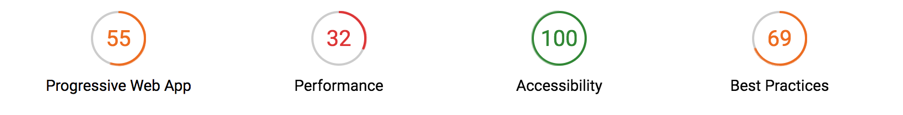
Brief intermission: I (actually Patrick Hulce) accidentally unearthed a Lighthouse bug, and significantly improved the performance score by moving a script from the head to the body. This is prooobably an accident and will be fixed in the future, but let’s document it for posterity anyway:
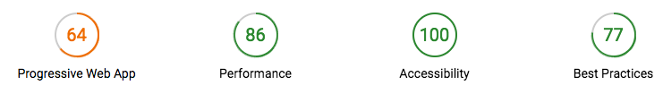
3. 🤖 Add a Service Worker
The polymer cli, bless its soul, actually generated a service-worker.js file for
us, we just haven’t added it anywhere, like our index.html:
<script>
if ('serviceWorker' in navigator) {
window.addEventListener('load', function() {
navigator.serviceWorker.register('service-worker.js');
});
}
</script>
With this change, Lighthouse is deeeeelighted:
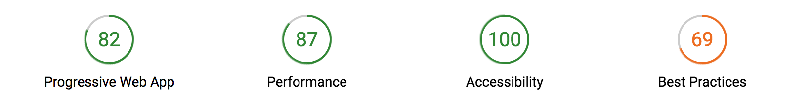
The PWA score has improved a lot! It can actually go all the way to 91, but I’m a) serving from localhost which doesn’t redirect HTTP traffic correctly, and b) there’s a bug that’s screwing me out of some money dollars:
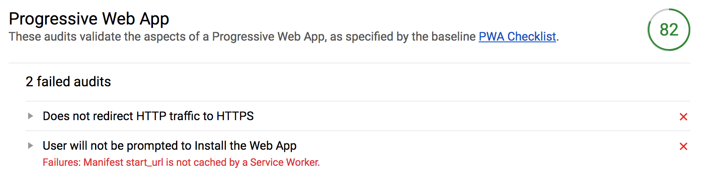
The perf score has improved a lot, because Service Workers are caching machines whos job is to help with perf, but our bundle size is still affecting our first paint. Look at those screenshots! We wait almost 2.7s before we paint some yellow on the screen! Surely we can do better:
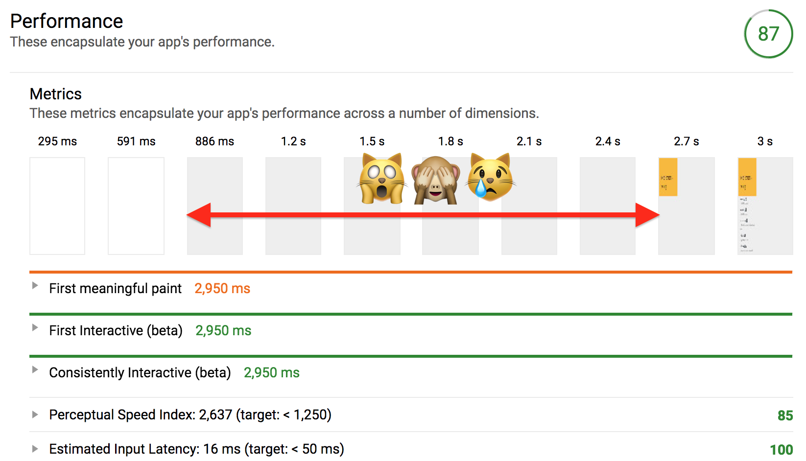
4. 🎨 Fix first paint
In that screenshot again, we’re getting some
content back pretty fast (the white -> gray transition at 886 ms), but then we show
nothing while the main element, <cat-alog>, is upgrading. To get around that,
I like to add fallback content in the light DOM of that main element. This works
because <cat-alog> doesn’t have any slots, so once it upgrades, any content between
its opening and closing tags is nuked:
<style>
[unresolved] p {
font-size: 30px;
padding: 20px;
}
</style>
<x-app unresolved>
<!-- This content would be blown away when
x-app upgrades, because x-app has no slots -->
<p>🙏 pls hold while fetching content</p>
</x-app>
Usually I try to match this fallback content to what the element paints once it upgrades. It’s a little annoying because you can’t always share styles, but most of the time (in my opinion) results in a better experience.
For extra bonus points, we can remove that unresolved attribute when
the element upgrades:
ready() {
super.ready();
Polymer.RenderStatus.afterNextRender(this, () => {
this.removeAttribute('unresolved');
/* Other lazy code here */
});
}
This last change ends up putting us in the 💚green💚 on Lighthouse!
The performance of the app is looking pretty great, since we basically moved first paint to that first downloaded byte:
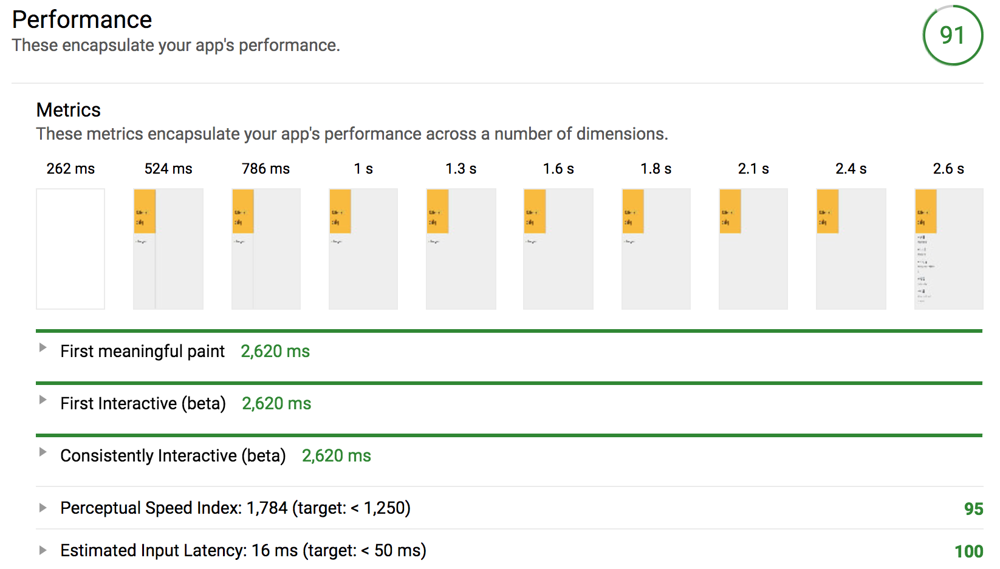
🆗 🆒
Final score on the deployed site is a satisfying A- across the board:
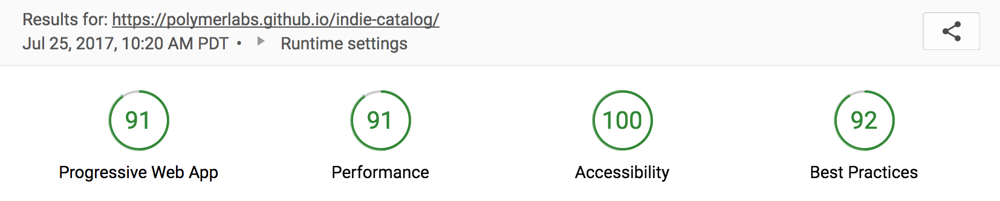
I didn’t try to win the Lighthouse jackpot, because I wanted to see how far I would get with using just the Lighthouse instructions and score, without inspecting any of the performance/network tabs in the Dev Tools. My next step would probably be to see whether lazy loading parts of my app will help, and a long and introspective look at the Dev Tools Network tabs, to see what downloads I could delay.
Anyway, I hope this helped, and that it showed that getting a good Lighthouse score is mostly ceremony and hardly any goat sacrifices. ❤️